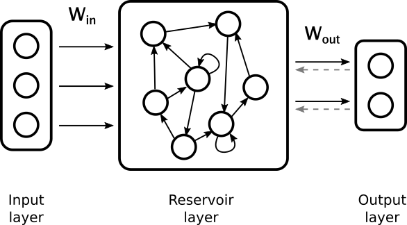
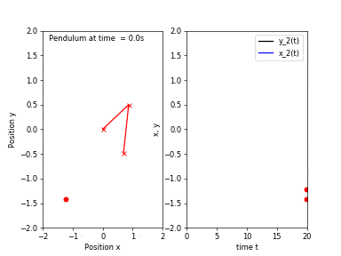
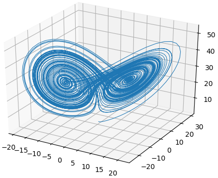
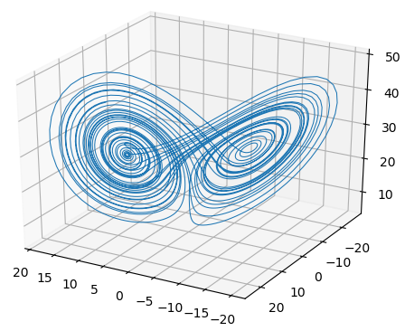
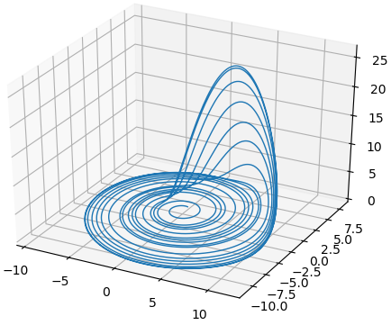
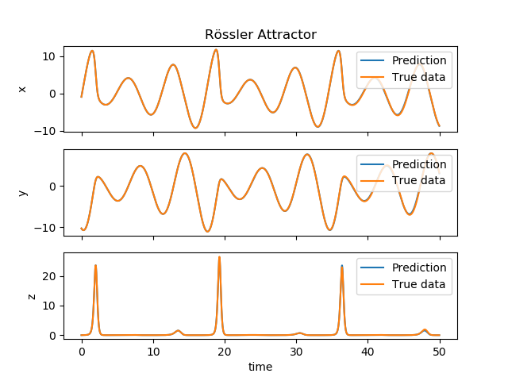
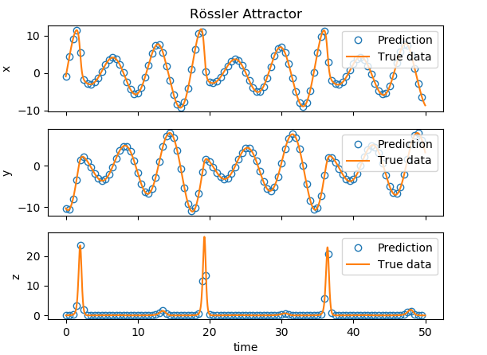
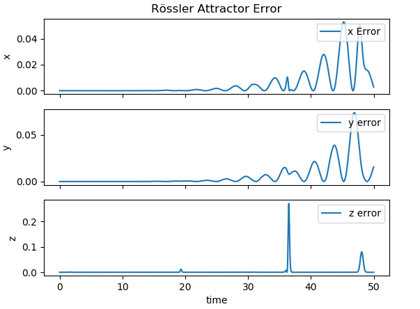
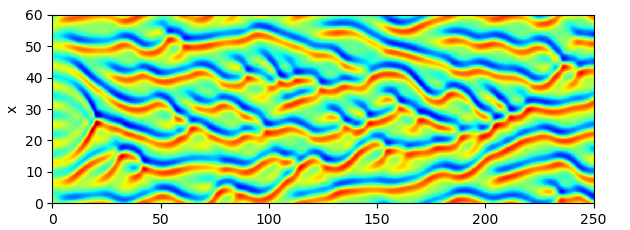
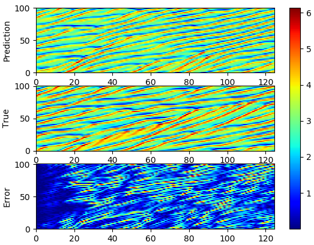

Data Science & Some Mechanics
This is mini-website of a project that I am working on that deals with topics in data science from the point of view of dynamical systems.
Table of contents
Hamiltonian Methods for Data Clustering
Imagine you finally land a data science job, and it entails checking, labelling and classifying every new datum added to the dataset manually. Such a job would be a dull and tedious job! Furthermore, with the volume of data being harvested today amounts exceeded the volume of water in the Atlantic Ocean. It would be impossible to complete by one person, let alone with an army of data scientists. The solution? You might have heard of data clustering. It is an automated process of grouping data and sorting them into groups and clusters.
A cluster can be thought of as a collection of data, that share a number of similarities with each other and they are dissimilar to objects in other clusters. In this article explains, in a simplified way, a type of clustering algorithm that relies on Hamiltonian dynamics. In the next section, I will present a very simplified explanation of what I mean by Hamiltonian dynamics and the underlying idea behind this type of clustering. The idea of using Hamiltonian dynamics for data clustering was presented in (Casagrande, Sassano, & Astolfi, 2012).
Many clustering algorithms are based on the idea of Euclidean distance, whereas here the idea is to use level curves to define the cluster’s boundary. Coincidentally, these boundaries are the solution to a Hamiltonian system. To illustrate that, consider the problem of sorting houses into their respective neighbourhoods. A distance based algorithms would identify the said house’s neighbourhood by finding the average distance between it and the other houses in the neighbourhood. A level set approach is akin to defining neighbourhoods by surrounding streets and test whether the house is inside the neighbourhood’s street circuit or not.
The most significant advantage of this method is we do not need to know the number of clusters a priori, unlike other clustering algorithms. Not only that, the geometric nature of the algorithm and Hamiltonian dynamics allow us to profit from other geometric information, like geometric moments to classify and clusters and even model time-varying clusters. Sadly, dealing with dynamic clusters will be untreated in this article. Another advantage is we can perform clustering on the surface of geometric objects, such as the sphere, without resorting to additional data preprocessing or transformation.
Hamiltonian Mechanics
First, what is meant by Hamiltonian dynamics? To answer we need to go back to Newtonian dynamics. From high-school physics class, we know that Newton’s second law states that the force is proportional to mass times the acceleration and that the Newton’s third law states that force need to be in balance. From these two laws we can derive the equations of motion.
If we consider a particle, (or a many particles), with a mass $m$,(or a group of $N$ particles) that move along a trajectory $x(t)$, then according to Newton’s second law, when an external force $F$ is applied, the equation of motion is then
This describes how the acceleration changes with time. Also, the trajectory here is described in terms of Cartesian coordinates. Newtonian description of dynamics depends greatly on the coordinate systems used and when attempting to model systems with geometric constraints, like a pendulum on a sphere, it becomes very messy. Furthermore, when we want to study the symmetries of a mechanical system, such description becomes a burden. You might wonder, why do we care about symmetries? They correspond to the system’s conserved quantities and are used to simplify the equations of motion. The solution the shortcomings of Newtonian mechanics is to use a different formulation that would take into consideration constraints and symmetries.
This leads us to Hamiltonian dynamics, which derives the equations of motion (same as Newton’s equation of motion) from Hamilton’s principle of minimal action, which is an extremal principle. It states that (at a given time interval), the trajectory followed by the dynamical system between two points, is such the time integral of the difference between kinetic and potential energies is at a minimum. In mathematical terms that means
the integrand, $T - U$ is called the Lagrangian $L$ and its dimensions is the energy. This means that the integral is action. Minimisation means that the dynamics take the path that requires the least amount of energy to get from an initial position to an end point. Moreover, the trajectory solves the Euler-Lagrange equation
which is equivalent Newton’s equation. The derivation of this equation is beyond the scope of this article, but the curious reader can consult one of the following books for a detailed and rigorous exposition (Arnol’d, 2013) or (Abraham, Marsden, & Marsden, 1978)
At this point, we need the position and velocity $(x(t), \dot{x}(t))$ to evaluate the Lagrangian. Instead of the velocity, we use momentum, and we write the Lagrangian as $L = p \cdot \dot{x} - H(x, p)$, where $H$ is the Hamiltonia. In Hamiltonian formulation, the trajectory solves Hamilton’s equation
which is equivalent to the Euler-Lagrange equation, but instead of it being an equation of second time derivative, we have two equations with only first order time derivative. One type of Hamiltonian dynamics is what is known as conservative systems, and such system conserve the Hamiltonian $H$, and when looking at $H$ as a level function, then the trajectory defines a level set.
Algorithm
$1^{st}$ Step
The first thing we do is to define the Hamiltonian function $H$ as
where $(x_k, p_k)$ for $k=1, \dots, N$ are our collected data points. Let us denote the set of collected data be denoted by $\mathcal{P}$. One can choose different Hamiltonians, but here we stick with a Gaussian function, because we can view it as probability density function with $N$ modes located at $(x_k, p_k)$.
$2^{nd}$ step
The second step of the algorithm is to chose a reference value $H_r$ and it defines the level set of the Hamiltonian. In the view point of probability density function, this can be viewed as curves of isodensity.
$3^{rd}$ step
The third step is to pick the $i^{th}$ the data point $(x_i, p_i)$ in $\mathcal{P}$, and we find the first level curve $\mathcal{S}_i$. This is done by solving the following Hamilton’s equation
with $(x_i, p_i)$ chosen as the initial condition. Here we choose the function $f$ to be
The idea of the function $f$ is to force the trajectory to land on the $H_r$ if the trajectory deviates from the level curve. When we reach a point $(x_k, p_k)$ with $H(x_k, p_k) = H_r$, then we reached the level curve, and the second term of the right hand side in Hamilton’s equation becomes zero. As a result, the solution of the Hamilton’s equation would remain on the level curve.
$4^{th}$ step
With the level curve $\mathcal{S}_i$ computed, we move onto the fourth step where for all other data point in $\mathcal{P}$ we check if they are inside the curve $\mathcal{S}_i$ or not and that is done by checking if the winding number $\omega(x_j, C_i)$, for $j= i+1, \dots, N$ defined by the integral along the curve $\mathcal{C}_j$. Mathematically that is
is a positive number. In simple terms, the winding number gives the number of times a closed curve would wind around a point inside of it. For this algorithm, a positive winding number would indicate that a data point belongs to a set. When the winding number $\omega(x_j, C_i) > 1$, we remove the point $(x_j, p_j)$ from the set $\mathcal{P}$.
We repeat steps 3 and 4 until $\mathcal{P}$ becomes an empty set. The result of this algorithm is a cluster groups defined by level curves $\mathcal{S}_k$, for $k = 1, \dots , M$, where $M$ is the number of cluster sets.
Examples
In all of these examples, we treat the data as elements in $(x,p)$ space, e,g. a pixels of a two dimensional image is a point $(x,p)$. The first example is using Hamiltonian-based clustering to flocks of birds, similar to the example presented in (Casagrande, Sassano, & Astolfi, 2012).

The second example is clustering spirals. There are three spirals and we demonstrate how the clustering algorithm can identify and group data points in their spiral groups accordingly.

The third example is an extension of the second one and it consists of clustering a spiral on a sphere. This uses a modification to the Hamiltonian and Hamilton’s equation, making use of the Hamiltonian’s symmetry. The result of such algorithm can be seen in Figure 3.

Conclusion
Using Hamiltonian dynamics is different than other methods, and it relies heavily on calculus and symplectic geometry, which I intentionally refrained from using, and with complex mathematics comes some various advantages. This method is still nascent and there are so many research avenues need to be explored to develop algorithms for data mining. One unexplored are is the role of conserved quantities and how they can be utilised potentially for object identification. I am planning on working on these things in the near future, so watch this space!
Predicting Chaos
These are my notes on echo state machines and their application in predicting chaotic systems. This is basically me trying to understand the following paper (Pathak, Lu, Hunt, Girvan, & Ott, 2017)
Despite the recent success of some artificial neural network architectures, like multilayer perceptron and convolutional neural networks, in pattern recognition applications, such network architectures are suitable for time-invariant problems. However, many real-world problems are time variables, like weather forecast, financial assets and other dynamical systems. To model such data, one needs to use a different architecture; namely, adding a recurrent connection to the node of the feed-forward neural network resulting in a more powerful type network architecture known as recurrent neural network, or RNN for short. RNN’s have garnered much attention from the machine learning community due to their potential modelling complex time-dependant systems. However, that comes at a price, as training is computationally taxing and slow. Moreover, plain RNN’s cause their error gradient to vanish, which further complicates training.
One possible solution to such problem was proposed by Jaeger as Echo State Network (Jaeger & Haas, 2004). It happened that Maass, independently, proposed his version of the solution known as Liquid State Machine (Maass, Natschläger, & Markram, 2002). The fundamental idea is to construct an RNN with random and sparse recurrent connections, i.e. not all states connected recurrently. The output of the network is, essentially, a combination of states of the RNN. Basically, fix an RNN for the whole process and such RNN’s are called reservoirs. We are then left with only the weights of the output layer that need training, which drastically reduces the effort and time needed to train the whole network. Moreover, one can use on-shot training. The RNN is then is fed an $M$ dimensional time-series as input, and as a result, the states become dependant on the input time series and its value at previous time, hence the “echo”. The ability to remember the input signal allows the network to predict what will come next.
|  |
|---|
| This is a schematic diagram of an echo state network |
Mathematical Description
Since the network’s states depend on time, the reservoir is in essence a complex dynamical system. Moreover, the state of the reservoir, $r$, depends not only on the state of the previous time-step, but also on an external input. Mathematically, the state, $r$, is an $N$ dimensional vector with each element $r_i$ is the state of the $i^{th}$ reservoir node.
The external input, $u$ represented by an $M$ dimensional vector, is coupled to the reservoir by an $N\times M$ matrix $W_{in}$, which does not have to be time-dependant. The discrete-time dynamical system is described by
The matrix $A$ was alluded to earlier and it is the adjacency matrix, which describes the connection amongst reservoir nodes. The matrix $A$ is a square $N \times N$ symmetric matrix. The $M_1$ dimensional vector $v$ is the output vector and the matrix $W_{out}$ is a $M_1 \times N$ matrix that maps $N$ dimensional reservoir states and maps them to the output. In other words, each output element is a combination of reservoir states. (It depends on $P$, which we can adjust).
The scalar $\alpha$ is the leaking rate, that ranges between $(0, 1]$ and its job here is to control the speed at which the reservoir state is updated.
At first glance it looks that this architecture has only one tunable parameter, $\alpha$, but in fact there are other parameters. The non-direct parameters are: size of the reservoir $N$, spectral radius of $A$ and its sparsity. The role of the parameters and general strategies of selecting them will be described in parameter tuning section.
Training
Training an ESN, unlike a typical RNN, is very straight forward. In essence, training is a minimisation problem, where we specify a cost functional to quantify how far off the network’s output is from the desired target. For example, if the error functional is chosen as
then if our network yields the output $v$, we need to know by how much we need to change it to minimise $J(v)$. This amount is given by the gradient of $J(v)$, denoted by $\nabla J$, in turn, it is a vector whose elements are the partial derivatives of $J$ with respect to individual elements of $v$, i.e. $\nabla J = (\frac{\partial J}{\partial v_1}, \dots)$. First, what we mean by gradient, it is the rate of change of the error when taking a specific direction. You can think of it in terms of mountain climbing, the higher the value of the gradient, the steeper the path is and harder to climb, and the lower the value the easier it is to climb. Then if we evaluate $\tilde v = v - \nabla J$, then we are guaranteed that $J(v) > J(\tilde v)$.
For RNN’s, training is done using back-propagation, which is going over the neural network from the output to the input to compute the partial derivatives of the error function. Partial derivatives are needed to adjust the weights of an RNN to yield the desired input-output pair. The issue with back-propagation for RNN’s is the manifestation of many issues like the vanishing gradients. In terms of our previous small example, this means $\tilde v \approx v$ and the improvement is very slow.
On the other hand, RNN can have very large gradients, which, depending on the error function, can cause the gradient update step to miss the local minimum, thus renders training very inefficient.
These problems motivated the introduction of ESN, as it can avoid back-propagation altogether, thanks to the fact that the weights of the input layer and the hidden-to-hidden connections are chosen randomly and fixed. Hence we are left with the weights of the reservoir to the output layer, and as a result, the training turns into a regression problem, which can be solved analytically allowing for a one-shot training.
For this architecture, the training is a supervised learning problem, where we seek to make the output $v(t)$, such that it approximates $V_d(t)$ when fed the input signal $u(t)$. Training is done by feeding the ESN an input signal and computing the value of the reservoir state, using dynamical system. From there, the output $v$ is computed using the reservoir-to-output map $W_{out} (r, P)$. Then the task is to find a parameter $P$ such that the error functional
is minimised. The term $\beta | P |^2$ is added to the error functional to regularise the regression problem, such regularisation is known as Tikhonov regularisation. The constant $\beta > 0$ task is to prevent over-fitting. Furthermore, this term prevents P from having large values, which causes slight perturbations in value of the reservoir states to be amplified. This is problematic in the case when the input signal $u$ is a feedback signal, it takes the output of the previous step as an input.
The regression problem can be written in matrix form as
where $X$ is a $(1 + M + N) \times N_t$ matrix and $V_d$ is a $M_1 \times T$ matrix. To find $W_{out}$ that yields the local minimum for $J$, we use the key fact from calculus that a function is at the local extremum when the gradient vanishes. Hence, we take the derivative of $J$ with respect to$ W_{out} $and set it equal to zero and in doing so, we obtain an expression for $W_{out}$ given by
Here we can clearly see the role the parameter $\beta$ plays. In its absence, all we have to do is invert $XX^T$, however, it is not always ensured that is invertible, or if so, it might susceptible to numerical instabilities. Thus, $\beta$ here plays the role of making $XX^T$ nicer to invert.
Parameter Tuning
In this section, we discuss the role of an echo state network’s parameter on its behaviour. As mentioned previously, the parameters of the ESN are: size of the reservoir, the sparsity of the adjacency matrix $A$, the spectral radius of $A$, denoted by $ \rho$, leaking rate and the scaling of $W_{in}$.
The size of the reservoir plays an important role in influencing performance of ESN. Due to its computational simplicity compared to other architectures, the reservoir size can be chosen to be very large. One advantage of using a large reservoir size is that it reduces the difficulty of finding a combination of reservoir outputs that approximates the desired signal. There is no exact science in finding the perfect size, however, one must choose a size that is at least bigger than the length (number of time steps) of the input that needs to be kept in memory. Another strategy is to tune a small ESN network and then increase the size of the reservoir.
Another parameter that can be tuned is the sparsity of matrices $W_{in}$ and $A$. What is meant by sparsity is the amount of zero elements in the matrix. A very sparse matrix has a very small percentage non-zero elements to total number of elements. This particular parameter does affect the performance of the network, as it makes information stay in one part of the reservoir without it propagating to other parts. As it is sparse, there are many options to choose in terms of distribution of non-zero elements. For example, a symmetric shape based on Erdős–Rényi model is the one chosen for part III of this series.
One of the most performances affecting parameters is the spectral radius, $ \rho$, of the adjacency matrix $A$. The spectral radius is the absolute value of the largest eigenvalue of the matrix $A$. This parameter is an indicator of the network having the so-called echo state property. This property indicates whether the asymptotic state of the system would echo the inputs. It was shown that having a spectral radius of less than unity, in some cases, guarantees echo state property. However, such is , and was that a can an state property with a spectral radius larger than one. Nonetheless, a very good strategy is to start with a spectral radius set to unity and then tune it. Also, the nature of the problem dictates the value of the spectral radius, where it is advised to use a $ \rho > 1$ for problems that require memory of the input and vice-versa.
The final parameter is the leaking rate $\alpha$, which is the rate at which the reservoir nodes are updated. It can be viewed as the time between two successive time steps. Or in terms of the input and output signal, it is the sampling rate.
Example
This is the part, I show you how to ESN can be used for short-time prediction of chaotic system. Again, as in the previous two parts, I will gloss over technical terms.The application of ESN in predicting chaotic systems was introduced in (Jaeger & Haas, 2004) and then extended in papers such as (Pathak, Lu, Hunt, Girvan, & Ott, 2017) and (Pathak et al., 2018). Recently, such networks were used to predict infinite dimensional chaotic systems, the Kuramoto-Sivashinsky equation in particular in (Pathak, Lu, Hunt, Girvan, & Ott, 2017).
First, I will go over the idea behind chaotic systems and what is meant by chaos. Consider a simple pendulum (which is an asymptotically stable system), if we release the bob from any location, it will eventually return to a resting position.

Starting from a location close to the first one would result in a trajectory of motion very similar to the previous one. Now, if we attach another pendulum to the bob of the first one, we obtain a double pendulum. Repeating the same experiment, this time the pendulum would take follow two different trajectories!

A chaotic system is a system whose solutions, henceforth I will refer to them as trajectories, are sensitive to perturbations in the starting position. If we evolve a dynamical system from two very close initial positions, their trajectories differ greatly as time passes. However, sensitivity to initial conditions is not the only criterion for chaos, other conditions such as topological mixing and dense periodic orbit. Fear not! I will not explain what the latter two things mean, however, the take home message is that sensitivity to initial conditions is not the only criterion for chaos.
We all heard a variant of the phrase “if a butterfly flaps its wings”, which describes the butterfly effect and this term was coined by Edward Norton Lorenz, which he originally said:
“The fluttering of a butterfly’s wing in Rio de Janeiro, amplified by atmospheric currents, could cause a tornado in Texas two weeks later” - Edward N. Lorenz
Edward N. Lorenz was an American mathematician whose work centred weather modelling and prediction. In his lifetime, he made a massive contribution to mathematics, where he helped formulate chaos theory. One of his famous works is the Lorenz 63 model which models the first three modes of an infinite dimensional weather model. I will go into more details for this model as I will show you how you can implement ESN to predict it for a short period of time.
We mentioned the double pendulum as being a chaotic system, there are other chaotic systems and the most famous ones are: Lorenz 63 attractor, Rössler attractor, and Kuramoto-Sivashinsky equation. The latter is one of the most interesting since it is an example of an infinite-dimensional system (governed by partial differential equation) that exhibits chaos.
Lorenz 63 Attractor
The most famous chaotic system is the Lorenz 63 system, whose trajectories, when plotted, give the shape of a butterfly (Lorenz, 1963).
|  |
|---|
| Trajectory of the Lorenz 63 system |
In weather modelling, one of the models used for convection is the Navier-Stokes equation, which model fluids, with the heat is coupled to according to the Boussinesq approximation which treats the change in temperature as a small forcing term to the Navier-Stokes equation. When the fluid is heated from below and cooled at the top layer, the fluid starts to move in a periodic fashion, creating the Rayleigh-Bénard convection, which is an instability that results in fluid circulating as the following Gif shows.
 |
|---|
| The amplitude of the velocity of fluid going through Rayleigh-Bénard convection |
Edward Lorenz noticed, by accident, when he was studying the solution of the Boussinesq approximation that the periodic solution changes drastically when the initial conditions are perturbed. This lead Lorenz to derive a simpler model from the Boussinesq equation, by describing the solution of the Navier-Stokes in terms Fourier coefficients. If this is the first time that you’ve encountered the term Fourier coefficients, don’t worry. One way to look at it is when a applying Fourier transformation, the solution of the system is represented in terms of frequencies (or modes). The Fourier coefficients correspond to the amplitudes of those frequencies. The result of the approximation is the celebrated Lorenz model, described by the following system of differential equations
with $a= 10$, $b= 28$, and $c = 8/3$. If you’re curious, $x$ corresponds to intensity of convection, $y$ temperature difference in the horizontal plane, and $z$ is the temperature difference in the vertical plane.
Now, we consider the vector ($u = (x,y,z)$) to be the input signal to the ESN. For the time being, we generate a Lorenz signal for $T = 20$, with $dt = 0.005$. We treat $u$ from $-40$ to $0$ to be the the training signal. The parameters of the ESN are chosen as such $N_r = 500$, with the learning rate $\alpha = 1.0$, the spectral radius $\rho = 0.6$, and the initial condition for weights of the hidden-to-hidden layer are an Erdős–Rényi matrix with degree $D = 6$.
At $T=0$, instead of feeding the ESN the input signal $u$, we use its output as a feedback. That is $u = y$. This way, the ESN starts producing the prediction. We let the ESN run until $T= 20$. Using the output of the ESN and the $u[3000: 5000]$, we compare both signals.
 |
|---|
| The output of the echo state network (blue) compared to the real solution (orange) of the Lorenz 63 system. |
|  |
|---|
| 3D plot of the trajectory obtained by the echo state network |
Rössler Attractor
Another famous chaotic system and such system came to being as a result of the search of a simpler model than the Lorenz system is the Rössler system (Rossler, 1979). As mentioned, the Lorenz model comes form a real-world physics, the Rössler system, however, does not have a physical meaning. From the graph of the Lorenz system, the butterfly plot can be considered as two spirals, Rössler wanted to find a system that only had one spiral.
|  |
|---|
| Trajectory of the Rössler Attractor. |
The mathematical description of the time evolution of the system is given by
with $a = 0.2$, $b = 0.2$ and $c = 5.7$. The same procedure was carried out for the Rössler system as with the Lorenz system in constructing an ESN. The parameters for the this ESN are the same as for the one in used for Lorenz attractor in the previous example, except the spectral radius $\rho = 1.05$. Surprisingly, the result of the prediction turned out to be much more accurate than the Lorenz system.
|  |
|---|
| The output of the echo state network (blue) compared to the real solution (orange) of the Rössler system. |
|  |
|---|
| Another plot of output of the echo state network in blue circles to simplify the comparison with the actual data. |
|  |
|---|
| The error between the output of the echo state network and the actual output of the Rössler system. |
Kuramoto-Sivashinsky Equation
Thus far we have mentioned 2-D and 3-D dimensional chaotic systems, and in fact there exists a infinite-dimensional systems (Kuramoto, 1978) and (Sivashinsky, 1977). Before we continue, first, I need to clarify by what I mean by finite and infinite-dimensional systems. For finite-dimensional systems, the solution is described as a combination of a finite number of basis functions. For example, the Lorenz system’s solution written as $u =(x, y,z) $is described in terms of quantities along each axis. On the other hand, infinite dimensional solutions are solutions that are described in terms of an infinite sum of basis functions.
In the previous examples, the systems’ solutions are all parametrised by time $t$ and the evolution equations are ordinary differential equations. However, many real world physics, dynamics depends not only on the rate of change of with respect to $t$, but also with the rate of change with respect to other independent quantities, e.g. space. Such systems are governed by partial differential equations.
An example of a chaotic infinite-dimensional systems is the Kuramoto-Sivashinsky equation
If you’re curious to see what is going on with is an equation, you can take the Fourier transform in space and look at what happens to the modes. I will translate this equation in plain terms. The first term on the right feeds energy to the system, which in turn renders it unstable. The second term on the right acts as a damper to low modes. Finally, the second term on the left describes the transfer of energy from the low modes high ones.
|  |
|---|
| The sample solution of Kuramoto-Sivashinsky equation |
One of the most interesting features of this system is that when $t \to \infty$ the solution, from any initial condition, is attracted to a space known as the \textbf{inertial manifold}. What’s interesting about the inertial manifold is that it is finite dimensional, which tells us that the solution of the KS as $t \to \infty$ is equivalent to that of a finite dimensional system.
For our prediction, the KS equation is discretised in space as, the solution is now a vector in $R^N$ where we chose $N = 128$ and (parameters)
|  |
|---|
| The sample solution of Kuramoto-Sivashinsky equation |
References
- Pathak, J., Wikner, A., Fussell, R., Chandra, S., Hunt, B. R., Girvan, M., & Ott, E. (2018). Hybrid forecasting of chaotic processes: Using machine learning in conjunction with a knowledge-based model. Chaos: An Interdisciplinary Journal of Nonlinear Science, 28(4), 041101. https://doi.org/10.1063/1.5028373
- Pathak, J., Lu, Z., Hunt, B. R., Girvan, M., & Ott, E. (2017). Using machine learning to replicate chaotic attractors and calculate Lyapunov exponents from data. Chaos: An Interdisciplinary Journal of Nonlinear Science, 27(12), 121102. https://doi.org/10.1063/1.5010300
- Arnol’d, V. I. (2013). Mathematical methods of classical mechanics (Vol. 60). Springer Science & Business Media.
- Casagrande, D., Sassano, M., & Astolfi, A. (2012). Hamiltonian-based clustering: Algorithms for static and dynamic clustering in data mining and image processing. IEEE Control Systems, 32(4), 74–91.
- Jaeger, H., & Haas, H. (2004). Harnessing nonlinearity: Predicting chaotic systems and saving energy in wireless communication. Science, 304(5667), 78–80.
- Maass, W., Natschläger, T., & Markram, H. (2002). Real-Time Computing Without Stable States: A New Framework for Neural Computation Based on Perturbations. Neural Computation, 14(11), 2531–2560. https://doi.org/10.1162/089976602760407955
- Rossler, O. E. (1979). An equation for hyperchaos. Physics Letters A, 71(2), 155–157. https://doi.org/https://doi.org/10.1016/0375-9601(79)90150-6
- Abraham, R., Marsden, J. E., & Marsden, J. E. (1978). Foundations of mechanics (Vol. 36). Benjamin/Cummings Publishing Company Reading, Massachusetts.
- Kuramoto, Y. (1978). Diffusion-Induced Chaos in Reaction Systems. Progress of Theoretical Physics Supplement, 64, 346–367. https://doi.org/10.1143/PTPS.64.346
- Sivashinsky, G. I. (1977). Nonlinear analysis of hydrodynamic instability in laminar flames—I. Derivation of basic equations. Acta Astronautica, 4(11), 1177–1206. https://doi.org/https://doi.org/10.1016/0094-5765(77)90096-0
- Lorenz, E. N. (1963). Deterministic nonperiodic flow. Journal of the Atmospheric Sciences, 20(2), 130–141.